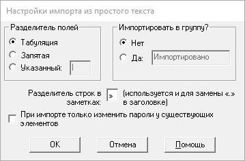

Password Safe позволяет импортировать данные о паролях из файлов других форматов. Данные файлы могут быть сформированы другими приложениями, экспортированы из таблиц, или даже составлены вручную в текстовом редакторе.
Password Safe поддерживает следующие форматы:
По окончании операции импорта Password Safe создаёт отчёт, содержащий информацию о выполненной работе и возникших проблемах (если такие были). Содержимое отчёта может быть скопировано в буфер обмена или сохранено на диск в том же каталоге, где находится контейнер. Отчёт можно посмотреть позже с помощью меню «Вид→Отчёты». Отчёт имеет фиксированное имя, зависящее от его типа. При повторении действия и сохранении отчёта на диск, предыдущий отчёт для этого действия перезаписывается. Примечание. Отчёт может содержать важные данные, поэтому возможность сохранения на диск следует использовать с осторожностью.
Примечание. Чтобы импортировать элементы из другого контейнера Password Safe, запустите ещё одну копию Password Safe (должен быть разрешён запуск нескольких экземпляров на вкладке Сервис→Настройки→Система) и откройте нужный контейнер. Затем перетяните из него необходимые элементы или группы в первый контейнер.
Импортируемые текстовые файлы содержат одну или несколько записей о паролях. Поля внутри элемента разделяются специальным символом. Информация об элементе может быть записана в одну или несколько строк. Описание формата импорта из текстового файла находится в разделе Формат текстового экспорта и импорта.
Разделитель полей используется для выделения полей в текстовых строках. Также можно указать имя группы, в которую будут помещены все импортированные элементы.

XML (eXtensible Markup Language) — распространённый формат для передачи данных между приложениями. Password Safe может импортировать XML-файлы, соответствующие схеме pwsafe.xsd, распространяемой вместе с Password Safe.
При импорте из XML-файла в пустой контейнер, в него также будут импортированы настройки контейнера. Если в контейнере уже есть элементы, поля с настройками игнорируются.
Однако, если XML-файл содержит именованные политики создания паролей, они будут импортированы независимо от того, есть ли в контейнере элементы. При этом, если в контейнере уже присутствует политика с таким же именем, она не будет замещена политикой из XML-файла.
Если импортируемый элемент использует именованную политику, которой нет в текущем контейнере и XML-файле, то ему будет назначена «политика по умолчанию».
Изменения в формате представления даты/времени в XML-файле
До версии 3.26 для экспорта использовался свой формат:
<name>
<date>гггг-ММ-дд</date>
<time>чч:мм:сс</time>
</name>
Где«name» — любое из имён полей, содержащих дату/время («ctime», «atime», «xtime», «pmtime», «rmtime», «changed»).
Начиная с версии 3.26 экспорт производится в соответствии со стандартом представления даты/времени, определённыым W3C. Версии 3.26 и 3.27 могли импортировать данные в любом из этих представлений, но с версии 3.27 поддерживается только формат из стандарта W3C.
Формат полей с датой/временем согласно стандарту W3C имеет следующее представление:
<namex>гггг-ММ-ддTчч:мм:сс</namex>
Для того, чтобы можно было отличить теги, записанные в «старом» стиле от «новых», к их именам был добавлен суффикс «x» («ctimex», «atimex», «xtimex», «pmtimex», «rmtimex», «changedx»).
Для импорта файлов, содержащих дату/время в «старом» стиле, вам необходимо вручную преобразовать содержимое этих полей к представлению по стандарту W3C.
Рекомендуемый способ импорта контейнеров KeePass V1 через XML-файл описан ниже.
Поддерживается импорт TXT-файлов KeePass V1 (проверено на файлах созданных KeePass V1.19b).
Перечисленные поля преобразуются в соответствующие поля Password Safe.
Каждый элемент начинается со строки заключённой в квадратные скобки («[»,«]»). Текст из этой строки считается заголовком элемента.
Каждое поле начинается с новой строки. Его содержание определяется по заголовку , указанному в начале строки.
Следующие поля игнорируются:
Обратите внимание, что в Password Safe значение даты и времени должны быть не позднее 19 января 2038 г. Более поздние даты считаются некорректными, и соответствующие поля не заполняются.
Обратите внимание, что при экспорте из KeePass необходимо поставить флажок Encode/replace newline characters by '\n', иначе операция импорта может завершиться с ошибкой или привести к неожиданным результатам.
Поддерживается импорт CSV-файлов KeePass V1 (проверено на файлах созданных KeePass V1.19b).
Перечисленные поля преобразуются в соответствующие поля Password Safe.
Следующие поля игнорируются:
Обратите внимание, что в Password Safe значение даты и времени должны быть не позднее 19 января 2038 г. Более поздние даты считаются некорректными, и соответствующие поля не заполняются.
Обратите внимание, что при экспорте из KeePass необходимо поставить флажок Encode/replace newline characters by '\n', иначе операция импорта может завершиться с ошибкой или привести к неожиданным результатам.
Рекомендуемый способ импорта контейнеров KeePass V2 через XML-файл описан ниже.
Password Safe не может напрямую импортировать файлы, созданные KeePass V2 (даже файлы экспорта в KeePass V1 CSV из KeePass V2). Но существует возможность экспортировать контейнер KeePass V2 в формат KeePass V1. После этого можно экспортировать данные в TXT- или CSV-формат и импортировать их как описано выше.
Password Safe не может напрямую импортировать XML-файлы, созданные KeePass V1 и KeePass V2, т. к. их формат сильно отличается от используемого в Password Safe. Но мы предоставляем XSL-файлы для преобразования их в совместимый формат (KPV1_to_PWS.xslt и KPV2_to_PWS.xslt). Указанны ниже программы могут быть использованы для обработки экспортированных XML-файлов с помощью XSLT-шаблонов. Полученные в результате преобразования файлы совместимы с импортируемыми Password Safe XML-файлами (для Password Safe V3.26 или новее).
XSLT-файлы соответствуют стандарту XSLT V1.0, описанному на http://www.w3.org/TR/xslt, и были проверены на файлах, созданных с помощью KeePass V1.19b и KeePass V2.15.
Обратите внимание, что в Password Safe значение даты и времени должны быть не позднее 19 января 2038 г. Более поздние даты считаются некорректными, и соответствующие поля не заполняются.
Для данных шаблонов на ОС Windows можно использовать следующие XSLT-процессоры. Приведённые в примерах командные строки предполагают, что
Для XML-файлов KeePass V1 используется команда:
msxsl KeePassV1.xml KPV1_to_PWS.xslt -o PWS.xmlДля XML-файлов KeePass V2 используется команда:
msxsl KeePassV2.xml KPV2_to_PWS.xslt -o PWS.xml
Для XML-файлов KeePass V1 используется команда:
AltovaXML -xslt1 KPV1_to_PWS.xslt -in KeePassV1.xml -out PWS.xmlДля XML-файлов KeePass V2 используется команда:
AltovaXML -xslt1 KPV2_to_PWS.xslt -in KeePassV2.xml -out PWS.xml
Все перечисленные программы бесплатны для использования, но Kernow требует регистрации после стократного использования.
| XML-элементы KeePass V1 | Эквивалентные XML-элементы Password Safe |
|---|---|
| <group> | <group> |
| <title> | <title> |
| <username> | <username> |
| <password> | <password> |
| <url> | <url> |
| <notes> | <notes> |
| <lastmodtime> | <pmtimex> и <rmtimex> |
| <creationtime> | <ctimex> |
| <lastaccesstime> | <atimex> |
| <expiretime> | <xtimex>, если в KeePass значение атрибута "expires" тега <expiretime> равно «true» |
| <image> <attachdesc> <attachment> | В Password Safe отсутствуют схожие поля, поэтому они игнорируются |
KeePass V2 экспортирует значения строковых полей (например, заголовок) в раздел <String> с элементами <Key> и <Value>. Пример:
<String> <Key>Title</Key> <Value>Заголовок элемента</Value> </String>
В таблице указаны преобразования элементов этого разделов при импорте в Password Safe.
| Значение <String>/<Key> в KeePass V2 | Эквивалент в Password Safe |
|---|---|
| Title (заголовок) | <title> |
| Username (имя пользователя) | <username> |
| Password (пароль) | <password> |
| URL (ссылка) | <url> или <runcommand> в зависимости от префикса (см. выше) |
| Notes (заметки) | <notes> |
| Все остальные | Добавляются в поле «Заметки» в виде: «Key: Value» |
KeePass V2 экспортирует все поля, связанные со временем в раздел <Times>. Пример:
<Times> <LastModificationTime>2011-05-30T14:20:57Z</LastModificationTime> <CreationTime>2011-05-27T18:09:29Z</CreationTime> <LastAccessTime>2011-05-30T14:20:57Z</LastAccessTime> <ExpiryTime>2999-12-28T23:59:59Z</ExpiryTime> <Expires>False</Expires> </Times>
В таблице указаны преобразования элементов этого разделов при импорте в Password Safe.
| Значения времени в KeePass V2 | Эквивалент в Password Safe |
|---|---|
| <Times>/<LastModificationTime> | <pmtimex> и <rmtimex> |
| <Times>/<CreationTime> | <ctimex> |
| <Times>/<LastAccessTime> | <atimex> |
| <Times>/<ExpiryTime> | <xtimex>, если <Times>/<Expires> равно «True» |
KeePass V2 создаёт запись в истории при изменении любого поля элемента. Password Safe отслеживает только изменения пароля. Все остальные изменения, сохранённые в записях истории KeePass, игнорируются.
| История KeePass V2 | Эквивалент в Password Safe |
|---|---|
| <Times>/<LastModificationTime> | <history_entry>/<changedx> |
| <String[Key='Password']> | <history_entry>/<oldpassword> |
| Все остальные значения из <History> | Игнорируются |
Ниже описаны преобразования кодов автонабора KeePass V2 (см. http://keepass.info/help/base/autotype.html) в коды Password Safe. Все неуказанные коды копируются без изменений.
| Коды автонабора KeePass V2 | Эквивалент в Password Safe |
|---|---|
| \ | \\ (экранирование символа «\») |
| Табуляция {TAB} | \t |
| Enter {ENTER} или ~ | \n |
| Забой {BACKSPACE}, {BS} или {BKSP} | \b |
| «+» на цифровой клавиатуре {ADD} | + |
| «-» на цифровой клавиатуре {SUBTRACT} | - |
| «*» на цифровой клавиатуре {MULTIPLY} | * |
| «/» на цифровой клавиатуре {DIVIDE} | / |
| + {+} | + |
| ^ {^} | ^ |
| % {%} | % |
| ~ {~} | ~ |
| (, ) {(}, {)} | (, ) |
| {DELAY X} Задержка в X мс. | \wX (\WX) |
| {DELAY=X} Установка задержки в X мс между нажатиями кнопок в последовательности. | \dX |
Ниже описаны ключевые последовательности подстановок KeePass V2 (см. http://keepass.info/help/base/placeholders.html) в коды Password Safe. Все неуказанные коды копируются без изменений.
Ключевые подстановки регистронезависимы. Ссылки на пользовательские строки имеют вид {S:FieldName}. Например, если у элемента задана пользовательская строка «eMail», на неё можно сослаться используя подстановку {S:eMail}.
| Подстановки KeePass V2 | Ключи автонабора в Password Safe | Ключи для команд в Password Safe |
|---|---|---|
| {GROUP} | \g | ${G} |
| {TITLE} | \i | ${t} |
| {USERNAME} | \u | ${u} |
| {PASSWORD} | \p | ${p} |
| {NOTES} | \o | ${n} |
| Подстановки KeePass V2 | Ключи для команд в Password Safe |
|---|---|
| \{ | \\{ (экранирование «\») |
| $ | \$ (экранирование «$») |
| {GROUPPATH} | ${g} |
| {URL} | ${url} |
| {URL:RMVSCM} | ${url} |
| {APPDIR} | ${appdir} |
| {DB_PATH} | ${fulldb} |
| {DB_DIR} | ${dbdir} |
| {DB_NAME} | ${dbname}.${dbextn} |
| {DB_BASENAME} | ${dbname} |
| {DB_EXT} | ${dbextn} |
| Все остальные | Копируются без изменений |